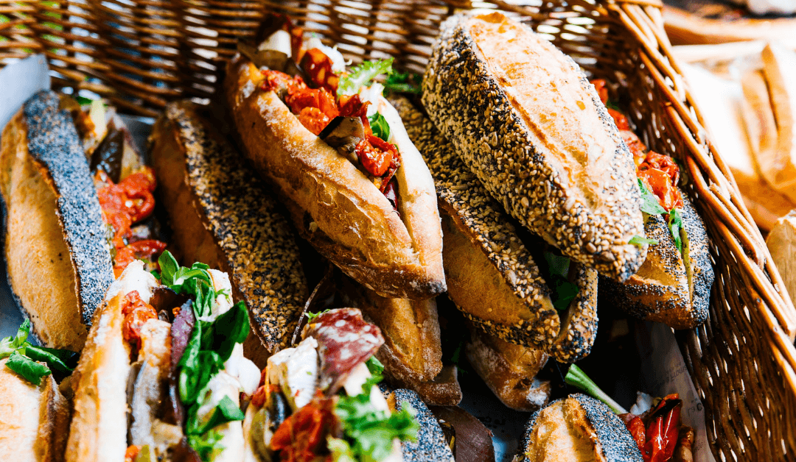

Titel van mijn site
Aanbieding
warme drank + gebakje 3 euro
De koude winterdagen komen er weer aan, dat betekend gezelligheid en wat nodige warmte. Een kopje koffie, een theetje of warme chocomelk zijn perfect voor in dit koude weer. De zoetigheid is ook zeker niet te missen tijdens de feestdagen. Daarom deze aanbieding, de lekkerst dingen van de winter gecombineert, een warme drank en een gebakje naar keuze voor maar drie euro. Kom dus nu snel even langs en laat deze aanbieding niet liggen.